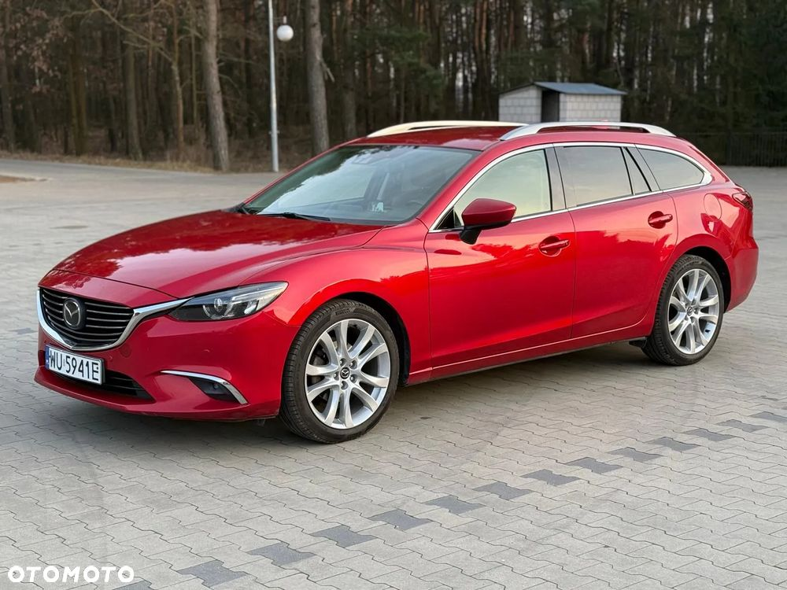

---
Mazda 6 2.5 Automat • Full Opcja • Soul Red • Salon Polska • VAT 23%
Sprzedaję auto, które naprawdę cieszy – zarówno wyglądem, jak i komfortem jazdy.
To Mazda 6 kombi w topowej wersji wyposażenia, z dynamicznym silnikiem 2.5 benzyna i automatyczną skrzynią biegów.
Piękny czerwony lakier Soul Red, auto z polskiego salonu, w pełni sprawne i gotowe do jazdy.
---
Dlaczego warto?
Sprawdzona jednostka 2.5 benzyna – trwała, dynamiczna, idealna pod LPG
Automat – komfort w trasie i w mieście
Full opcja – bogate wyposażenie, brak kompromisów
Piękny lakier Soul Red (kod 41V) – kolor przyciągający uwagę
Kombi – bardzo pakowne i praktyczne
Pochodzenie: Salon Polska, kupione od 1 właściciela
Faktura VAT 23% – możliwość odliczenia VAT
Zarejestrowana i opłacona w Polsce
---
Dane techniczne:
Rok produkcji: 2016
Pierwsza rejestracja: 2017
Przebieg: 173 000 km
Silnik: 2.5 benzyna (192 KM)
Skrzynia: automatyczna
Napęd: przedni (FWD)
Kolor: czerwony metalik (Soul Red)
Typ nadwozia: kombi
---
Stan techniczny:
Auto w pełni sprawne – silnik, skrzynia, zawieszenie bez uwag.
Samochód był kiedyś uderzony w tył – elementy zostały przelakierowane profesjonalnie.
Drobne rysy i ślady użytkowania obecne, ale ogólny stan bardzo dobry.
Wnętrze czyste i zadbane – brak przetarć czy uszkodzeń.
---
Wyposażenie – wersja Full:
Skórzana tapicerka
Elektryczne i podgrzewane fotele
System audio BOSE
Nawigacja GPS
Kamera cofania i czujniki parkowania (przód + tył)
Klimatyzacja automatyczna, dwustrefowa
Keyless Go (bezkluczykowy dostęp i odpalanie)
Tempomat, asystent pasa ruchu, rozpoznawanie znaków
LED-owe reflektory i światła dzienne
Alufelgi, relingi dachowe, pakiet chrom
---
Dokumenty:
Faktura VAT 23% (kupujący zwolniony z podatku PCC)
Komplet kluczyków
---
Samochód idealny dla osób, które szukają przestrzeni, niezawodności i komfortu, bez rezygnowania z wyglądu i stylu.
Zadbane, nieprzekombinowane, z pewną historią.
Dostępne od ręki – zapraszam na jazdę próbną.
Lokalizacja: Siedlce
